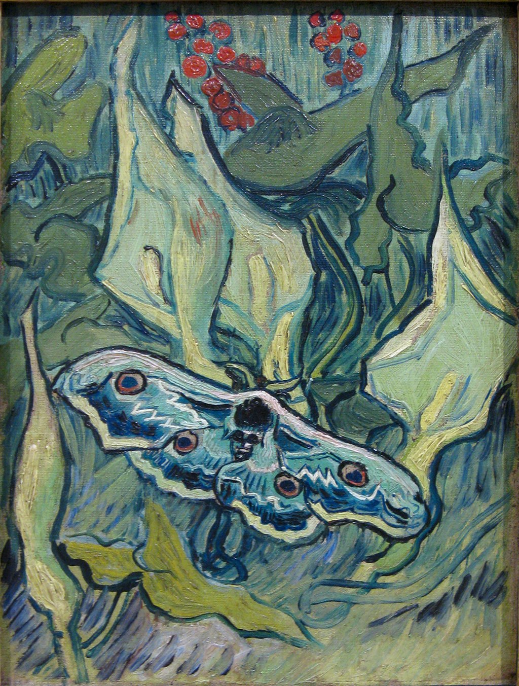

<head>
<meta charset="UTF-8" />
<meta name="keywords" content="drawing, painting" />
<meta name="description" content="drawings by Sunjy" />
<title>Sunjy</title>
<link rel="shortcut icon" type="image/x-icon" href="../../mImages/mCommon/favicon.ico" media="screen" />
<link rel="stylesheet" type="text/css" href="../../mCsses/mCommon/mCssA.css" />
<link rel="stylesheet" type="text/css" href="../../mCsses/mCommon/mCssB.css" />
<link rel="stylesheet" type="text/css" href="../../mCsses/mCommon/mCssC.css" />
<link rel="stylesheet" type="text/css" href="../../mCsses/mCommon/mCssD.css" />
<link rel="stylesheet" type="text/css" href="../../mCsses/mContent/mCssA.css" />
<link rel="stylesheet" type="text/css" href="../../mCsses/mContent/mCssB.css" />
<link rel="stylesheet" type="text/css" href="../../mCsses/mContent/mCssC.css" />
<link rel="stylesheet" type="text/css" href="../../mCsses/mContent/mCssD.css" />
</head>
<script type="text/javascript" src="../../mScripts/mContent/mContentAA.js" /></script>
<script type="text/javascript" src="../../mScripts/mContent/mContentAB.js" /></script>
<script type="text/javascript" src="../../mScripts/mContent/mContentAC.js" /></script>
<script type="text/javascript" src="../../mScripts/mContent/mContentAD.js" /></script>
<script type="text/javascript"></script> 
<script type="text/javascript">
document.write('<div class="mImgAbsolute"></div>');
/*
document.write('<p class="mFontSizeBColor" />From a white paper...</p>');
document.write('<table class="center"><tr><td>');
document.write('');
document.write('</td></tr></table>');
*/
</script>


<script type="text/javascript">
document.write('<p class="mFontSizeBColor" />Great Peacock Moth</p>');
document.write('<p class="mFontSizeSColor" />“Great Peacock Moth” by Vincent van Gogh is part of a series of paintings made between 1889 and 1890 of at least four paintings of butterflies and one of a moth.<br><br>Van Gogh was fascinated by the metamorphosis of the caterpillar into a butterfly, which was symbolic of Van Gogh’s belief in people’s capability for transformation.<br><br>Van Gogh preferred the color of the butterflies and found the moths generally duller in color, but the great peacock moth caught his attention.<br><br>This painting was made in Saint-Remy-de-Provence, May-June 1889, during which time Vincent wrote to his brother Theo:<br><br>“I drew yesterday a large, rather rare moth called a skull moth, with wonderfully fine colors: black, gray, white, nuanced and with a crimson glow or slightly olive green; it is very large.”<br><br>Van Gogh painted the moth, based on his drawing. Van Gogh imaginatively called it a “skull moth” and also drew a skull on the abdomen.<br><br>This painting was made after he left Arles and voluntarily entered an asylum in Saint-Rémy-de-Provence. Around this time, he wrote:<br><br>“Sometimes moods of indescribable anguish, sometimes moments when the veil of time and fatality of circumstances seemed to be torn apart for an instant.”<br><br>When in need of solace, nature is where Van Gogh went to find peace. In a letter to a friend, Van Gogh uses the miracle of transformation from caterpillar to butterfly to consider what possibilities may be available in the universe:<br><br>“We are at liberty to feel fairly serene about the possibilities of painting in a better and different existence, an existence altered by a phenomenon that is perhaps no more ingenious and no more surprising than the transformation of a caterpillar into a butterfly … The existence of a painter-butterfly would be played out on the countless celestial bodies, which, after death, should be no more inaccessible to us than the black dots on maps that symbolize towns and villages are in our earthly lives.”<br></p>');
document.write('<table class="center" /><tr><td>');
document.write('<br>Van Gogh was fascinated by the metamorphosis of the caterpillar into a butterfly, which was symbolic of Van Gogh’s belief in people’s capability for transformation.<br><br>Van Gogh preferred the color of the butterflies and found the moths generally duller in color, but the great peacock moth caught his attention.<br><br>This painting was made in Saint-Remy-de-Provence, May-June 1889, during which time Vincent wrote to his brother Theo:<br><br>“I drew yesterday a large, rather rare moth called a skull moth, with wonderfully fine colors: black, gray, white, nuanced and with a crimson glow or slightly olive green; it is very large.”<br><br>Van Gogh painted the moth, based on his drawing. Van Gogh imaginatively called it a “skull moth” and also drew a skull on the abdomen.<br><br>This painting was made after he left Arles and voluntarily entered an asylum in Saint-Rémy-de-Provence. Around this time, he wrote:<br><br>“Sometimes moods of indescribable anguish, sometimes moments when the veil of time and fatality of circumstances seemed to be torn apart for an instant.”<br><br>When in need of solace, nature is where Van Gogh went to find peace. In a letter to a friend, Van Gogh uses the miracle of transformation from caterpillar to butterfly to consider what possibilities may be available in the universe:<br><br>“We are at liberty to feel fairly serene about the possibilities of painting in a better and different existence, an existence altered by a phenomenon that is perhaps no more ingenious and no more surprising than the transformation of a caterpillar into a butterfly … The existence of a painter-butterfly would be played out on the countless celestial bodies, which, after death, should be no more inaccessible to us than the black dots on maps that symbolize towns and villages are in our earthly lives.”<br>" />');
document.write('</td></tr></table>');
</script>


